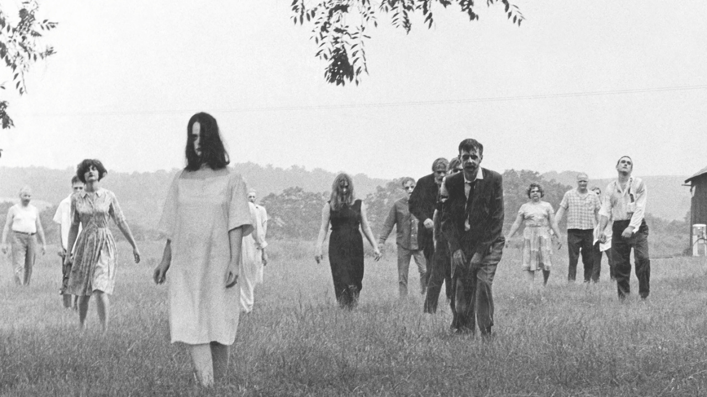
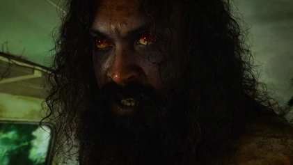
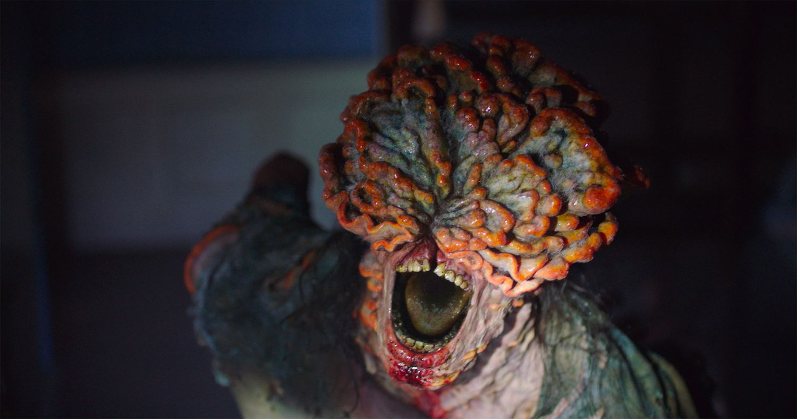
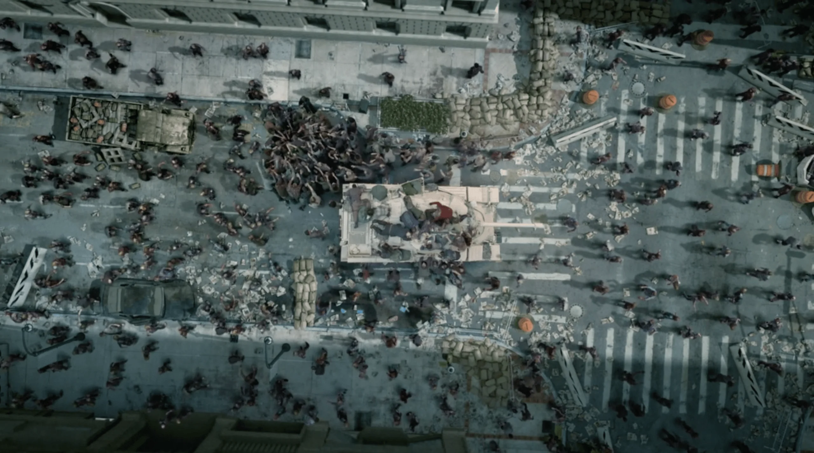

Types of Zombies
Not every zombie clocks in the same way. Here's your field guide to the undead, so you know whether to walk, run, or pack a picnic and quietly leave.
- The Shambler: Slow, groaning, and relentless. Shamblers rely on numbers, not speed. Try: Night of the Living Dead (1968)
- The Runner: Fast, feral, and always late for something terrible. Try: 28 Days Later (2002) or Train to Busan (2016)
- The Voodoo Zombie: The original. A soul-stripped servant under a sorcerer's control. Try: White Zombie (1932)
- The Fungal Zombie: Taken over by a parasitic fungus, inspired by real-life nature. Try: The Last of Us
- The Thinker: Zombies who talk, plan, and sometimes organize. Rude, but impressive. Try: Return of the Living Dead (1985) or Land of the Dead (2005)

Viruses, Infections, and the Living (or Not)
Every outbreak has a culprit, and the big question is whether the host is still breathing when the trouble starts. Here's your guide to what's causing the chaos and what condition the patient is in.
- The Curse (Voodoo): In Haitian folklore, a sorcerer steals the victim's will and leaves a body behind. Host: appears dead, raised by magic Try: White Zombie (1932)
- The Mystery Cause (Romero): Radiation, a space probe, or nobody knows. The dead simply get up. Host: dead, then reanimated Try: Night of the Living Dead (1968)
- Everyone Is Infected (The Walking Dead): A pathogen already in every survivor means any death leads to reanimation. Host: dead, then reanimated Try: The Walking Dead
- Trioxin (Return of the Living Dead): A toxic chemical spill that raises the dead and leaves them ravenous. Host: dead, reanimated, and hungry Try: Return of the Living Dead (1985)
- The T-Virus (Resident Evil): Umbrella's engineered virus can infect the living and reanimate the dead, and untreated bodies can return as Crimson Heads. Host: dead or dying, then reanimated Try: Resident Evil
- The Rage Virus: A blood-borne infection that turns people violent within seconds. No resurrection required. Host: alive Try: 28 Days Later (2002)
- Cordyceps (The Last of Us): A fungus takes over the brain and body, growing more monstrous in later stages. Host: alive, but no longer in control Try: The Last of Us
- Las Plagas (Resident Evil 4): A parasite that controls the host while leaving them alive and hostile. Host: alive, controlled by a parasite Try: Resident Evil 4
- Rabies (Real Life): The most zombie-like real infection, known for making hosts aggressive. Host: alive, until the disease is fatal
- Ophiocordyceps (Real Life): The fungus that inspired The Last of Us. It steers ants up plant stems before it kills them. Host: alive until the very end


My Favorite: The Accidental Apocalypse
Give me a curse or a meteor and I'll shrug. Give me a lab, a clipboard, and someone saying "what's the worst that could happen?" and I'm in. The accidental outbreak is the scariest kind of zombie story because nobody meant for it to happen. A corporation cuts corners, a virus slips out, and a few careless hours later the whole world is running for its life. It's horror with a very human root cause: our own curiosity, greed, and terrible quality control.
- Resident Evil: The Umbrella Corporation's T-virus escapes its facility, and a company built on secrets can't contain the mess. Corporate cover-ups, meet consequences.
- 28 Days Later: Activists free lab chimpanzees infected with the Rage virus, and Britain is overrun within weeks. Good intentions, catastrophic timing.
- Return of the Living Dead: A military chemical stored in the wrong place gets released, and the dead get up hungry. Proof that labeling your barrels matters.
- The Crazies: A military bioweapon contaminates a small town's water supply, and neighbors turn on each other. Romero's take on the man-made outbreak.
What makes this subgenre work is the "what if." It doesn't need magic or monsters, just a plausible mistake and the fear that somewhere, someone is working on something they shouldn't be. That's why these stories still feel uncomfortably close to home.

Curses, fungi, viruses, and one very unfortunate lab mix-up: the undead come in every flavor, but the stories that stick with us are the ones where the apocalypse starts with a mistake. Whichever kind of zombie you fear most, the lesson is the same. Label your barrels, lock your doors, and never trust a company that says the facility is "perfectly secure."